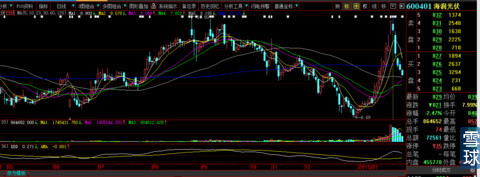
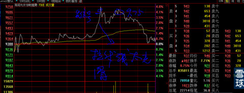

看下图左侧的长时间下跌，你用掰手指头的方法也能数清楚多少天，由于下跌时间长且是“阴跌”方式，所以涨起来就会“立起来走”（我在波浪理论的解释中有：交替原则）。
涨起来的时候，凭眼感就知道不可能创新高，这就是我让大家在9.7元那天卖出的原因。

至于多卖3毛钱还是5毛钱，真的不在意啦。见下图，第一个圈的地方就是我要大家卖出的位置。后来又有多次这样的价格。大家会发现，拉升的时候线条很光滑，就是因为这样的光滑接近90度直角拉升引起我的高度警惕。正常吃货拉升，是一层层的往上吃，能看出来买方的力量，这种典型的对倒，就是庄家心态的暴露。

以上并不是我今天要讲的重点，我要讲的是现在、今后。
大家看，仅仅5天的下跌幅度确实很大，但是，正因为如此，说明主力在涨停那天已经基本出逃光了，不然就不会下跌的如此迅速。
那么下跌幅度到底了吗？
正因为感觉短期幅度“阶段性到底”了，会想“短时间下跌如此之多，必有反弹”，可是要知道这个或许的小反弹是为更大的跌幅准备的啊粉丝们。
也就是说，市场中不能简单的利用什么黄金分割啊、速阻线啊、支撑线啊这软件技术去YY理解，这是软件技术无法解释的：短线空间够了，时间不够。这就是我今天要讲的核心内容。你们一定要问我什么道理，我也既讲不清楚也说不出来，就是一种感觉，但是，事实就是这样。我是怕我的粉丝上当受骗，才写这篇帖子。至于其他人？呵呵，关老子屁事。
就像其他股票如果出现浙江龙盛今天这样的高位头部线，我一眼就认出来了，但是，看到浙江龙盛现在的“股价头部形态”，我同样一眼就认出来：这个绝对不是头部形态，是上升中继形态，你硬要问我为什么，我也说不清楚，可能就是老手的功力所在吧。
你非要再问我，我只能说：去悟吧！我为什么说海润光伏短期跌幅够，但是时间不够？就是一种眼感，这种感觉需要时间的磨练。
从信息发布来说，在股价9.3元的位置，怎么可能10股送20股？当天我就评论“必有妖怪”。我还不敢说“这是骗局”，因为我总想在证监会严查严打阶段，怎么可能出现如此赤裸裸的操纵股价方式，而且是如此笨拙的方式？呵呵，只有你匪夷所思想不到的，没有笨人、蠢人做不出来的。我的这个名言在这里再次应验。
通过以上分析，既然股价仅仅是10元的位置，大庄甘愿冒被证监会查处的风险，采用发布送股提案的方式逃跑的方式，（谁要再说这个市场里面没有庄家的蠢货，你就去笨死算了。这么明目张胆的庄股行为，还在跟那些读书的基金经理一样说：市场没有庄），说明大庄缺钱、不惜代价，看来后面的跌幅不会小。
综上所述：同样是K线组合，从时间、位置、公告等等，就能够看出和推导出未来的一些基本情况。所以说，仅仅凭均线、K线组合、股价位置这些伎俩还远远不够。很大程度上就是脑子里的一个闪念，这个闪念是综合知识的叠加在一起的迅速判断。
以上就是想跟大家分享的看盘后心得。
阿葱@炒的是心:作为一个有进取心的公司来说3块钱的股价太低端了。
炒的是心@阿葱: 不是的啦，到底是你们理解不了呢还是我表达能力有问题呀？10送20是一个极大的利好筹码，大资金怎么可以轻易用？就好像高射炮打蚊子。如果股价通过长年运作，到了很高的位置例如25元，主力希望有人抢筹，能够找到对手盘的时候，才会祭出这张牌。股价现在还在图形的底部，就开始用这张牌，必有欺诈。也或者本意就是为了引来证监会的调查，为把股价打得更深做准备。也就是说，主力认为股价太高，需要再从3、4元收集筹码做起。这样，未来的涨幅空间才大。主力手中的筹码已经出尽，就利用政府的力量，不用花费一粒子弹，就可以把股价打下深渊，再加上业绩集中亏损的办法。我这个帖子的意思就是警告粉丝，不要轻易抢它的反弹，手中有的，不要给予太多的希望。
96李根3142@炒的是心:“在股价9.3元的位置，怎么可能10股送20股？”看了许久想不清楚，太嫩太笨，怕心大生气，求师兄讲解
炒的是心@96李根3142:
1、10送20 =9.3元/3=3.1元除权价，股本却变成47.2亿股。就像你家做了一桌满汉全席却是给狗吃的，你想可能吗？我说它：必有妖，这么大比例送股不可能的道理就在这里。如果股价在25元有这种提议，我倒是有可能会相信。
2、是前两大股东的提议而已，例如你如果买多成了前大股东，你也可以这样提议，能不能通过，反正你说了不算。但是你提议又不犯法，所以就是利用制度的漏洞。可是这种伎俩太让人明显是做局，所以，证监会一定会查。
3、大资金这样干，一定会想到证监会会查，所以，第一种可能：主力资金紧张，到了不计后果哪怕涉及犯法也要利用规则出逃的地步；第二钟可能：主力是想长年坐庄，反正是前期头部位置，正好引来证监会查的巨大风波，为庄逃离后股价的快速下跌又不需要付出打压成本服务。这样理解，后期的下跌就会很深。
炒的是心@炒的是心:其实心大当时的本意是在前期压力位先出来，等回调后再进场，没想到当天收盘后10送20消息一出，心大直接否定了后期走势。
回复@墨土: 对的，本来还有憧憬，公告一出心就凉了。
桀骜不驯的菜鸟@ChenMatthew:你们平时看图是先看短期的正常图形再把日K收缩到最小来看吗？我这俩天开始大量看图，知道老师说的有8种图形，但是我昨天发现一部分图形既像双底突破，又有些像心形，有什么心得吗？这种幼稚问题不敢问老师
炒的是心@桀骜不驯的菜鸟: 你去读陈丹青的书，其中有一句话很实用：我每次到大都会看油画，走进去，首先是一幅画的整体气质会吸引我，而不是这张画的细节，因为距离远我还看不到这些细节。这幅画在我眼中会迅速过滤掉周围满墙的挂画。当我走进它，才会再用职业画家的习惯，一个局部一个局部的去观看，再看人家是如何一笔一笔画出来的。